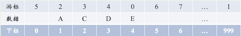
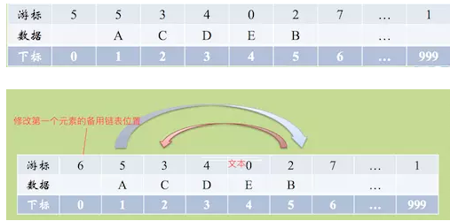

静态链表说明
用数组描述的链表称之为静态链表。
这种描述方法叫做游标实现法。

我们对数组的第一个和最后一个元素做特殊处理，他们的data不存放数据。
我们通常把未使用的数组元素称为备用链表。
数组的第一个元素，即下标为0的那个元素的cur就存放备用链表的第一个结点的下标。即第0个元素的游标为5
数组的最后一个元素，即下标为MAXSIZE-1的cur则存放第一个有数值的元素的下标，相当于单链表中的头结点作用。即第999个元素游标为1
静态链表存储结构1
2
3
4
5
6#define MAXSIZE 1000
typedefstruct
{
ElemTypedata; // 数据
intcur; // 游标（Cursor）
} Component, StaticLinkList[MAXSIZE];
静态链表的插入：
每当进行插入时，可以从备用链表上取得第一个结点作为待插入的新结点。
要将B元素插入到A元素后面：

优点：
在插入和删除操作时，只需要修改游标，不需要移动元素，从而改进了在顺序存储结构中的插入和删除操作需要移动大量元素的缺点。
缺点：
没有解决连续存储分配（数组）带来的表长难以确定的问题。
失去了顺序存储结构随机存取的特性。
问题：如何快速找到单向链表的中间节点？
方法1. 从头遍历单向链表，得到链表总长度L，然后再从头遍历L/2长度拿到中间节点，程序执行次数3L/2
方法2. 利用快慢指针，设置两个指针search和mid都指向单向链表的头节点。其中search指针的移动速度是mid的两倍。当search指针指向末尾节点的时候，mid指针就恰好在中间位置。也即标尺的思想。程序执行次数L/21
2
3
4
5
6
7
8
9
10
11
12
13
14Status GetMidNode(LinkList L, ElemType *e) {
LinkList search, mid;
mid = search = L;
while (search->next != NULL) {
if (search->next->next != NULL) {
search = search->next->next;
mid = mid->next;
} else {
search = search->next;
}
}
*e = mid->data;
return OK;
}
问题：如何判断单向链表是否有环？
方法一：使用p、q两个指针，p总是向前走，但q每次都从头开始走，对于每个节点，看p走的步数是否和q一样。如图，当p从6走到3时，用了6步，此时若q从head出发，则只需两步就到3，因而步数不等，出现矛盾，存在环。
方法二：使用p、q两个指针，p每次向前走一步，q每次向前走两步，若在某个时候p == q，则存在环。